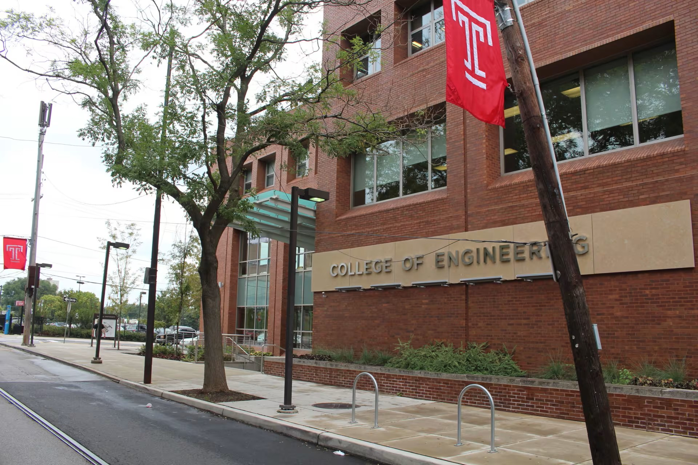
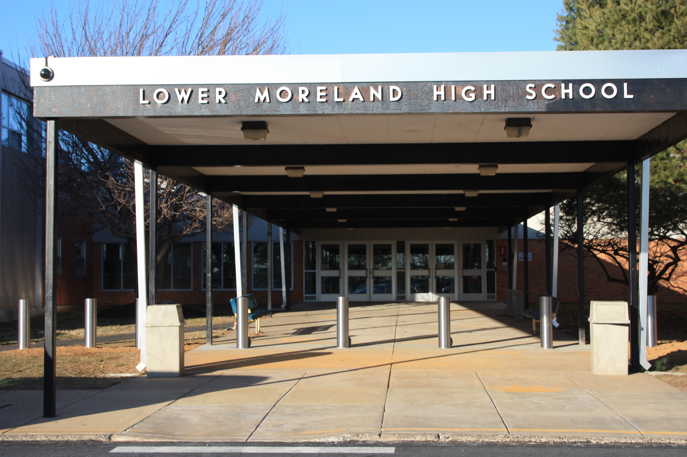
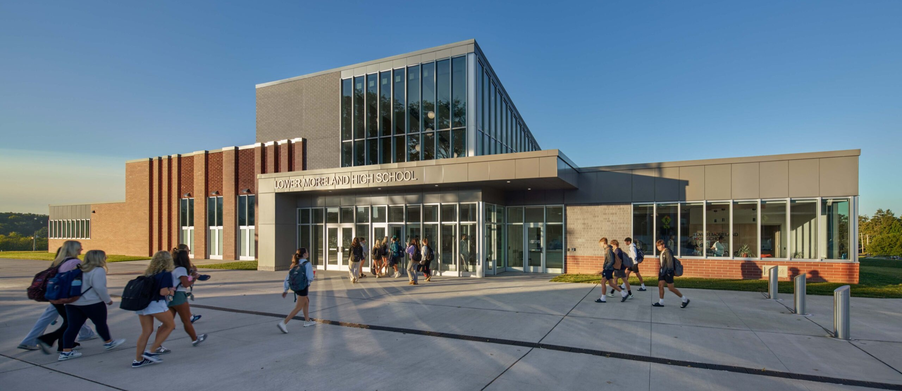

Education
Temple University

- Bachelor of Science: Electrical & Computer Engineering
- Minor: Computer Science
- Certificate: Fundamentals of Physics
- GPA: 3.95 / 4.00
- STEPS Program Scholar (NSF-funded Sustainable Temple Energy & Power Scholars Program)
- Dean's List: Fall 2024, Spring 2025
- Expected Graduation: May 2028
Lower Moreland High School

Old High School

New High School
- Graduated: June 2024 | GPA: 4.00 / 4.00 | AP Scholar with Honor
- Awards & Honor: The Extra Mile Award, The Bernard Mazaud Award, Student of the Month, Most Dedicated Athlete (Outdoor Track)
- Activities: Cross Country; Indoor & Outdoor Track and Field; Environmental Club; Coding Club; Asian Culture Club; Chess Club
Leadership & Involvement
Temple University - Institute of Electrical and Electronics Engineers (IEEE) Student Branch
Outreach Lead, Sep 2024 - Present
- Led the planning and execution of key IEEE events, including Breaboard Workshop, Soldering Workshop, Lockheed Martin Info Session, and Resume Workshop, boosting student engagement and IEEE membership
- Earned 3rd place out of 20 teams at the 2025 IEEE R1 & R2 Student Conference Sumo Bot Competition (Stony Brook University)
- Programmed and optimized a Pololu Zumo autonomous sumo robot in C++ (Arduino), collaborating on sensor calibration and hardware integration
Temple University - Robotics
Member, Sep 2024 - Present
- Assisted in programming robot subsystem using C++ and Python to interpret sensor inputs
- Collaborated with team members to support electrical and circuit tasks, including motor controller testing
Additional Clubs: Society of Asian Scientists and Engineers (SASE), Badminton Club
Experience
Temple University
Sustainable Temple Energy Power Scholar (STEPS) Ambassador
March 2025 - Present
- Engineered and programed Micro:bit and Drone:bit platforms in Python, developing flight-path algorithms, joystick controls, and obstacle-navigation features
- Debugging and rebuilding hardware (including soldering) to ensure reliable demonstration performance
- Led STEM workshops, high-school tours and open-house events, teaching Python coding, basic circuit, and wind turbine blade design experiment
- Mentored STEPS underclassmen, providing academic coaching, study strategies, and guidance on campus resources
Undergraduate Teaching Assistant
Aug 2025 - Present
ENGR 1011 - Intro to Engineering and Engineering Technology
- Assist faculty with course instruction, hands-on activities in foundational engineering topics
- Tested components and created instructional slides for connecting hardware like fans, LEDs, and Temperature sensors
- Guided students through group projects, assignments involving Excel, Micro:bit, and Python, fostering collaboration and applied learning
- Track and check off students' in-class assignments, ensuring timely and accurate completion
Temple University - Department of Electrical and Computer Engineering
Undergraduate Research Assistant
Oct 2025 - Present
Advisor: Dr. Bai Li
- Maintained the research lab's website to showcase projects, research updates, and publications
- Assisted in developing a mobile elderly-care assistive robot for older adults living independently, supporting features for medication reminders, scheduling, and conversational assistance
- Integrated a large language model (LLM) for answering user questions and voice-based interaction
- Supported machine-learning posture-detection models using camera and sensor data to evaluate whether users perform excercise correctly
- Tested the robot's mobility features, including user-following and physical demonstration of exercise
Achievements & Awards
STEPS Scholarship
The STEPS scholarship at Temple University, funded by the NSF, is awarded to outstanding students selected by the Electrical & Computer Engineering faculty for exceptional academic achievement in high school. The program provides peer mentorship, a supportive community of like-minded scholars, and opportunities to engage in sustainability-focused research and professional development.